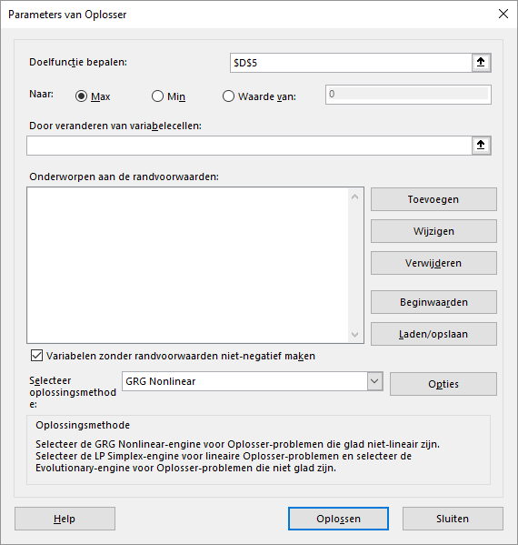
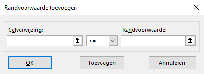
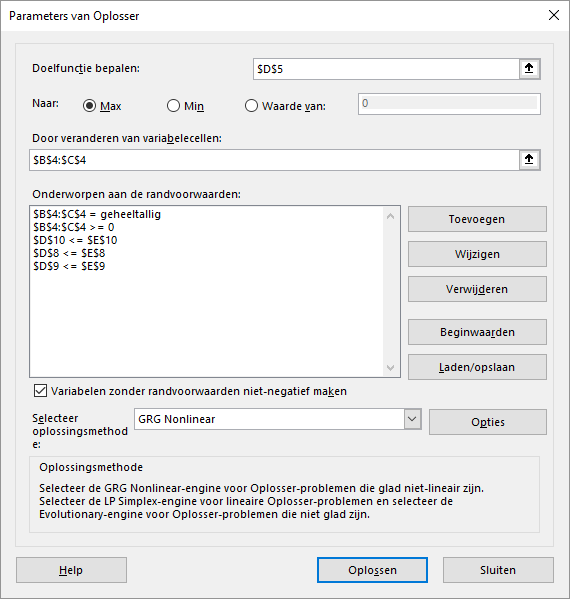
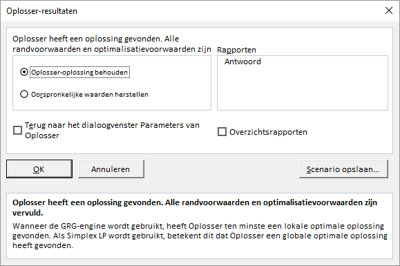
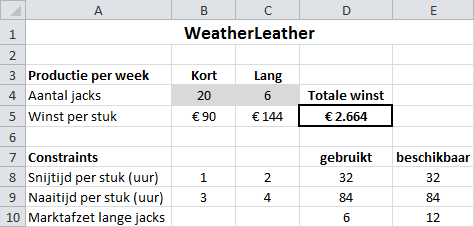
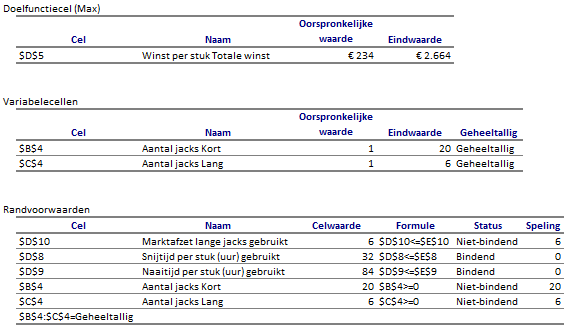

Taak: Gebruik Oplosser
Stapsgewijze beschrijving van het gebruik van de Oplosser voor de casus WeatherLeather.
Als voorbeeld wordt de casus WeatherLeather gebruikt. Bij deze casus moet de winst gemaximaliseerd worden.
Bestand: WeatherLeather.xlsx
- Open het hulpbestand.
- Selecteer de doelcel D5.
-
Kies tab Gegevens > Oplosser (groep Analyse).
Figuur 1: Dialoogvenster Parameters van Oplosser  - Controleer dat in het vak Doelfunctie bepalen het adres $D$5 is ingevuld.
- Controleer dat bij Naar de keuze Max geselecteerd is.
-
Klik in het vak Door veranderen van variabelecellen en
selecteer daarna in het werkblad de cellen B4:C4.
Excel maakt hier dan van $B$4:$C$4.
-
Klik op Toevoegen.
Figuur 2: Dialoogvenster Randvoorwaarde toevoegen  -
Voer als randvoorwaarde in D8 <= E8 en klik op
OK.
Het dialoogvenster Parameters Oplosser verschijnt weer en Excel heeft de eerste randvoorwaarde omgezet in: $D$8 <= $E$8.
- Klik op Toevoegen.
-
Voer als randvoorwaarde in D9 <= E9 en klik nu op
Toevoegen.
Het lege dialoogvenster Toevoegen verschijnt weer. Je krijgt nu niet te zien dat Excel de tweede randvoorwaarde heeft toegevoegd.Tip: Door op Toevoegen te klikken in plaats van OK kun je snel achter elkaar de randvoorwaarden toevoegen zonder steeds weer naar het dialoogvenster Parameters Oplosser terug te keren.
- Voer als randvoorwaarde in D10 <= E10 en klik op Toevoegen.
- Voer als randvoorwaarde in B4:C4 >= 0 en klik op Toevoegen.
-
Voer als randvoorwaarde in B4:C4 geh.
Excel plaatst nu automatisch geheeltallig in het vak Randvoorwaarde.
-
Alle restricties zijn nu toegevoegd. Klik op OK.
Figuur 3: Parameters Oplosser voor WeatherLeather Opmerking: Excel heeftgeh omgezet in geheeltallig in het vak met de randvoorwaarden. -
Klik op Oplossen.
Na korte tijd verschijnt het resultaatvenster van de Oplosser.
Figuur 4: Resultaatvenster Oplosser  -
Selecteer Oplossing behouden (standaard). Selecteer
Antwoord (vak Rapporten) en klik dan op
OK.
Op het werkblad wordt nu het resultaat getoond dat door de Oplosser gevonden is.
Figuur 5: Werkblad met oplossing En er is ook een nieuw werkblad gemaakt met de naam Antwoordrapport ....
Figuur 6: Antwoordrapport voor WeatherLeather Tip: De namen die in het rapport gebruikt worden zijn niet altijd juist of duidelijk. Dat komt omdat Excel deze namen haalt uit de de tekstcellen in de omgeving. Om te zorgen dat er wel goede namen in het rapport gebruikt worden moet je de relevante cellen in het werkblad eerst van een naam voorzien. Dit wordt sterk aanbevolen.Waarschuwing: Bij het onderdeel Randvoorwaarden in het Antwoordrapport is onder het kopje Status te zien welke restricties Bindend zijn. Wanneer dat het geval is wil dat zeggen dat de grens van de restrictie bereikt is en er geen speling meer is. Zo is in het voorbeeld te zien dat alle capaciteit voor de snijtijd en naaitijd gebruikt wordt. De marktafzet voor lange jacks is niet bindend, daar zouden nog 6 stuks meer afgezet kunnen worden.